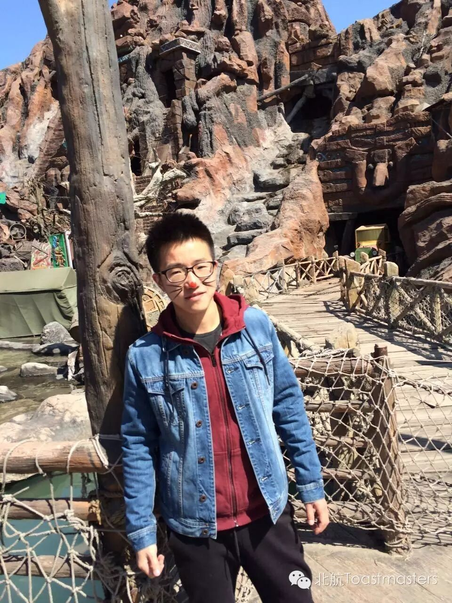

Time: 19:30-21:30,Friday,April,1st
Venue: Room B208, New Main Building, Beihang University
April Fool
Toastmaster Han
Table Topic Master Bowen
April Fool’s Day, the most funny and amusing day of the year! A lot of happy and funny things happened on this day. Have you been an April fool? If you have some funny stories about April fool, you should definitely join with us and share your joy with us. It’s more about April fool. You can also get some meaningful and resonant things besides enjoyment. So come to join us at 7:30 in Beihang Toastmasters. Everyone is welcome!
Competent Communication Projects (CC)
The Truth of Relativity(CC-2)
Speaker: Crystal
What do you think about the relativity? Just some complicated and obscure theory? You are so wrong. Our beautiful and shinning Crystal has her own particular understanding about the relativity. It’s far beyond the scientific theory, it’smore like philosophy-relativity! Are you curious? Come and listen to her speech.

I will see it when I believe it (CC-3)
Speaker: Yeager
As a successful gentleman and a life-winner, Yeager will give us a speech about his inspirational stories on the way to success. You would learn some exclusive information about the future scientific giant. Only in Toastmaster on Friday night.
How to chat with girls (CC-6)
Speaker: Vance
Have you ever been depressed by not good at chatting with girls? Vance, a handsome boy from Beijing Normal University who are always be loved by countless girls, today he will teach you something which will make you become very popular among girls.
What is Toastmasters?
Toastmasters International (TI) is a nonprofit educational organization that operates clubs worldwide for thepurpose of helping members improve their communication, public speaking, andleadership skills.
You can find us by the following map of Beihang University.

https://mp.weixin.qq.com/s/K-lmk6i2nMfZKM4ZDVP2ww
本页为抢救式本地归档，图文已永久保存。